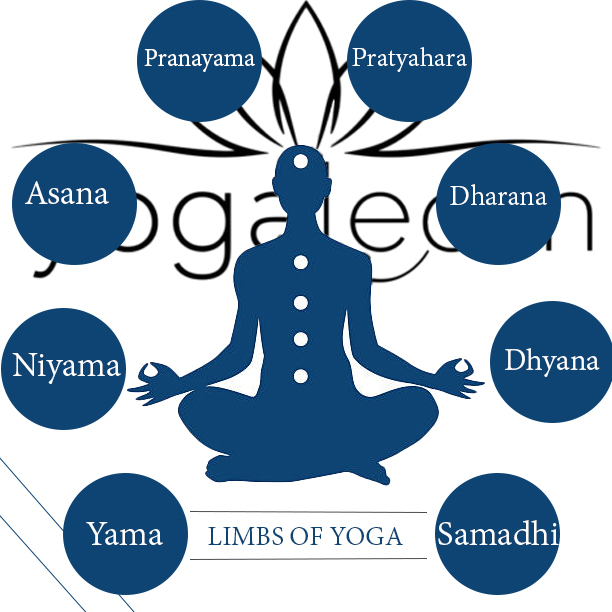

योग के 8 अंग

1. यम
- अहिंसा: किसी भी प्रकार की हिंसा से बचने का अभ्यास।
- सत्य: सत्य बोलने और सच्चाई के पथ पर चलने का अभ्यास।
- अस्तेय: चोरी न करने का अभ्यास।
- ब्रह्मचर्य: इन्द्रियों को नियंत्रण में रखने का अभ्यास।
- अपरिग्रह: आवश्यकता से अधिक संग्रह न करने का अभ्यास।
2. नियम
- शौच: शारीरिक और मानसिक शुद्धि का अभ्यास।
- संतोष: जीवन में संतुष्ट और संतोषी रहने का अभ्यास।
- तप: आत्म-अनुशासन और धैर्य का अभ्यास।
- स्वाध्याय: आत्म-चिंतन और स्व-अध्ययन का अभ्यास।
- ईश्वर प्रणिधान: समर्पण और ईश्वर में आस्था का अभ्यास।
3. आसन
- शारीरिक मुद्राएँ और स्थितियाँ जो शरीर को मजबूत और लचीला बनाती हैं।
4. प्राणायाम
- श्वास पर नियंत्रण का अभ्यास, जिससे ऊर्जा के प्रवाह को नियंत्रित किया जा सके।
5. प्रत्याहार
- इन्द्रियों को बाहरी वस्तुओं से हटाकर भीतर की ओर मोड़ने का अभ्यास।
6. धारणा
- एकाग्रता का अभ्यास, जिससे मन को एक बिंदु पर केंद्रित किया जा सके।
7. ध्यान
- ध्यान का अभ्यास, जिससे मन की शांति और स्थिरता प्राप्त हो सके।
8. समाधि
- आध्यात्मिक मिलन और आत्म-साक्षात्कार की अवस्था।
Move to top